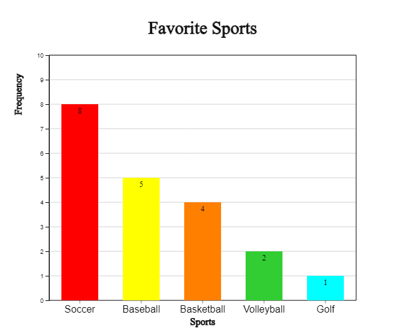

In the case of categorical data, the following graphs are drawn and analyzed.
- bar graph
- pie graph
- rainbow graph
- band graph
- line graph
The data in the form of words are analyzed by drawing a word cloud.
2.1 Bar/ Pie/ Rainbow/ Band Graph
⭐ Think
The frequency table that surveyed 20 students in an elementary school class
for their favorite sports is as follows:
[Table 2.1] Frequency table of favorite sports
Sports
Number of students
Soccer
8
Basketball
4
Baseball
5
Volleyball
2
Golf
1
üíé Explore
What are some graphs that can be easily observed what a favorite sport is like?
When you ask your students about their favorite sports, they say, 'soccer',
'basketball', 'baseball', ... You can get answers like this, which is called
qualitative data. Most qualitative data are referred to as categorical
data because their values represent categories. Qualitative data can be
summarized as a frequency table by counting the number of students in each
category, and examine their characteristics using a bar graph, a pie graph,
a rainbow graph and a band graph.
A bar graph shows the frequency of each category of data at the height
of a rectangular bar. Spacing between the bars is used to emphasize that
it is categorical data such as in <Figure 2.1>.
<Figure 2.1> Bar graph for favorite sports
A pie graph is a graph in which the frequency of each category in the
whole data is divided into pie slices. For better comparison of proportions, draw the circle pieces in the order of the largest category in a clockwise direction.
<Figure 2.2> Pie graph for favorite sports
A rainbow graph is a modified form of a pie graph and is a graph in which the frequency of each category is divided into raibow pieces and displayed in the total data.
<Figure 2.3> Rainbow graph for favorite sports
A band graph is a modified form of a pie graph, and is a graph in which the
frequency of each category is divided into rectangle pieces and displayed
in the total data. It is also possible to sort in the order of the largest
value of the category, but to distinguish it from the pie graph, the
rectangle pieces are drawn in the order of the categories of the data.
<Figure 2.4> Band graph for favorite sports
üé≤ Practice 2.1
Draw a bar graph, pie graph, and band graph for favorite sports and observe which sports students like the most.
Solution
Enter the desired title for 'Main Title', 'y title', and 'x title' and
enter 'Category' and 'Frequency' as in <Figure 2.5>.
Click the [Bar Graph] button to display a bar graph as in <Figure 2.1>.
You can also draw the bar graph again by selecting the color of the desired
category. If you select the Emoji icon for each category on the far right and check
‘Emoji’ under the graph, a bar graph like <Figure 2.6> appears.
<Figure 2.5> Data input and Bar graph for favorite sports data
<Figure 2.6> Bar graph with Emoji icons for each category
In a similar way, if you check 'Frequency the frequency can be displayed on the bar as shown in <Figure 2.7>.
<Figure 2.7> Bar graph with frequencies
By using the (Soring) option under the graph, you can sort the bars in descending
or ascending order of frequency as in <Figure 2.8> or <Figure 2.9>.

<Figure 2.8> Bar graph in descending order of frequencies
<Figure 2.9> Bar graph in ascending order of frequencies
Click the [Pie Graph] button to display a pie graph as in <Figure 2.2>.
Click the [Rainbow Graph] button to display a rainbow graph as in <Figure 2.3>.
Click the [Band Graph] button to display a band graph as in <Figure 2.4>.
üé≤ Practice 2.2
The fruits that elementary school students liked were as follows:
[Table 2.2] Fruits that students liked
Fruits
Number of students
Strawberry
15
Apple
10
Banana
25
Grape
20
Orange
10
Tomato
2
Watermelon
13
Pineapple
5
Draw Bar graph, Pie chart, Rainbow chart and Line graph using 『eStat』.
Solution
Enter the desired title for 'Main Title', 'y title', and 'x title' and
enter 'Category' and 'Frequency' in <Figure 2.10>. Select each fruit imoji icon on the far right.
Click the [Bar Graph] button and when the graph appears, check the 'Emoji'
below the graph. You can also draw the bar graph again by selecting
the color of the desired category.
<Figure 2.10> Data input for favorite fruits
<Figure 2.11> Bar graph for favorite fruits with imoji
Click the [Pie Chart], [Rainbow Chart] and [Band Graph] button to display pie chart, rainbow chart,
and band graph.
⏱ Exercise 2.1
According to the United Nations 2018 estimates, World largest 10 cities
(mixture of city, metropolitan and urban area) are as follows:
[Table 2.3] World largest 10 cities (mixture of city, metropolitan and urban area)
City
인구수
Tokyo (Japan)
37.4
Delhi (India)
28.5
Seoul (Korea)
25.7
Shanghai (China)
25.6
San Paulo (Brazil)
21.7
Mexico City (Mexico)
21.6
Cairo (Egypt)
20.1
Mumbai (India)
20.0
Beijing (China)
19.6
Dhaka (Bangladesh)
19.6
Draw a bar graph, pie graph, rainbow graph and band graph to find out the characteristics.
⏱ Exercise 2.2
A summary of the survey of prospective jobs of elementary school students
is as follows:
[Table 2.4] Prospective jobs of elementary school students
Job
Number of students
Movie-star
45
Docort
30
Teacher/Professor
60
Lawyer
24
Pro Gamer
10
Sportsman
43
Police
26
Draw a bar graph, a pie graph, rainbow graph and band graph to identify the characteristics.
2.2 Line Graph
⭐ Think
The following table shows the population of Korea, surveyed at approximately five-year intervals from 1925 to 2019.
[Table 2.5] Population of Korea
Year
Population (unit 10,000)
1925
1902
1930
2044
1935
2221
1940
2355
1944
2512
1949
2017
1955
2150
1960
2499
1966
2916
1970
3144
1975
3468
1980
3741
1985
4042
1990
4339
1995
4455
2000
4599
2005
4704
2010
4799
2015
5106
2019
5178
üíé Explore
What kind of graph can easily observe the data measured over time?
Data measured over time is often observed using a line graph. In a line graph,
each data is displayed as a dot on the XY plane, with the time such as month or year
as the X axis and the value of the other variable as the Y value, and then connected
with a line. It is similar to a bar graph, but the change in data over time can be
observed.
<Figure 2.12> Line graph of Korea’s population
Observing the line graph of Korea's population, it can be seen that it was increased
from 1925 to 1944, and then decreased significantly in 1949 and 1954 due to the Pacific War and the Korean War. After that, the population continued to increase significantly during the baby boom period in the late 1950s, but the trend of increase became moderate after 1990, and this trend has become more gentle after 2015.
üé≤ Practice 2.3
Draw and observe a line graph for the Korean population in [Table 2.5].
Solution
Enter the ‘main title’, ‘y title’, ‘x title’ as shown in <Figure 2.13>, and
enter the number of population by year in ‘Line 1’, the variable name next to it,
and year data in ‘X’.
If you click the [Execute] button, a line graph as shown in <Figure 2.12> appears.
You can also draw a line graph again by selecting the color of each line variable.
<Figure 2.13> Data input for Line Graph and result
When there are multiple variables observed at the same time, the line graph
can draw multiple lines simultaneously on one graph.
üé≤ Practice 2.4
Draw and observe the line graph for the average temperature of Spring,
Summer, Fall, and Winter season in Korea such as in [Table 2.6] on one graph.
[Table 2.6] Average temperature of each season in Korea (unit: degree in Celsius)
Year
Spring
Summer
Fall
Winter
1973
11.6
24.5
12.9
-1.4
1974
10.8
22.4
13.0
-0.1
1975
11.2
23.9
15.5
0.3
1976
10.9
22.6
12.5
-1.7
1977
11.8
23.5
15.0
0.7
1978
11.7
24.7
14.3
2.2
1979
11.2
23.5
13.6
-0.2
1980
11.0
22.1
13.4
-2.3
1981
11.5
23.6
12.2
-0.1
1982
12.0
23.4
14.3
-0.2
1983
12.2
23.4
14.2
-2.1
1984
10.7
24.3
13.8
-0.6
1985
11.5
24.1
14.3
-2.1
1986
11.4
22.9
12.6
1.2
1987
11.1
23.2
14.1
0.3
1988
11.0
23.6
13.6
1.7
1989
12.3
22.9
13.7
1.4
1990
11.7
24.3
15.2
0.2
1991
11.4
23.4
13.5
1.7
1992
11.6
23.2
13.4
1.1
1993
11.1
21.7
13.8
0.5
1994
11.8
25.3
14.8
0.8
1995
11.1
23.7
13.4
-0.6
1996
10.6
23.5
14.1
0.5
1997
12.1
24.0
14.0
1.9
1998
13.4
23.1
15.4
1.6
1999
12.1
23.3
14.7
0.3
2000
11.6
24.2
13.7
0.3
2001
12.2
24.2
14.3
1.5
2002
12.7
23.1
12.5
0.9
2003
11.9
22.3
14.7
1.4
2004
12.2
24.0
14.7
0.5
2005
11.7
24.1
14.8
-0.1
2006
11.5
23.6
15.1
2.4
2007
12.1
23.8
14.5
0.7
2008
12.5
23.7
15.1
1.7
2009
12.6
23.3
14.7
0.5
2010
10.8
24.9
14.5
-0.7
2011
11.0
24.0
15.3
-0.4
Solution
Enter the 'main title', 'y title', and 'x title' as shown in <Figure 2.14>,
and enter the Spring, Summer, Fall, and Winter temperatures from 'Line 1' to 'Line 4'.Enter each variable name as Spring, Summer, Fall, Winter, and enter year data in 'X'.
If you click the [Execute] button, a line graph as shown in
<Figure 2.15> appears. You can also draw a line graph again by
selecting the color of each line.
<Figure 2.15> Data input of average temperature by season and its line graph
Looking at the line graph of the average temperature by season, it can be seen
that the average temperature is gradually increasing, especially in Winter.
⏱ Exercise 2.3
The following table shows the average life expectancy of Koreans surveyed
every 10 years from 1970 to 2020. Draw a line graph to find out
the characteristics.
[Table 2.7] Average life expectancy of Koreans
Year
Average life expentancy
1970
62.3
1980
66.1
1990
71.7
2000
76.0
2010
80.2
2020
81.3
⏱ Exercise 2.4
The table below shows the amount of imports and exports of Korea from 2001 to 2020. Draw a line graph
to find out the characteristics.
[Table 2.8] Amount of imports and exports of Korea (unit: billion dollars)
Year
Export
Import
2001
1504
1411
2002
1625
1521
2003
1938
1788
2004
2538
2245
2005
2844
2612
2006
3255
3094
2007
3715
3568
2008
4220
4353
2009
3635
3231
2010
4664
4252
2011
5552
5244
2012
5479
5196
2013
5596
5156
2014
5727
5255
2015
5268
4365
2016
4954
4062
2017
5737
4785
2018
6049
5352
2019
5422
5033
2020
5125
4676
2.3 Word Cloud
⭐ Think
The following is Wikipedia's explanation of the 4th industrial revolution.
[Table 2.9] Wikipedia's explanation of the 4th industrial revolution.
The Fourth Industrial Revolution (4IR or Industry 4.0) is the ongoing
automation of traditional manufacturing and industrial practices,
using modern smart technology. Large-scale machine-to-machine communication
(M2M) and the internet of things (IoT) are integrated for increased automation,
improved communication and self-monitoring, and production of smart machines
that can analyze and diagnose issues without the need for human intervention.[1]
üíé Explore
What words are important to explain the 4th industrial revolution?
A word cloud is a visual representation of information in text data.
The word cloud examines the frequency of all the words appearing in a given document,
and displays the importance of the frequently appearing words with font size,
inclination, or color. >Figure 2.16&gr; is a word cloud for the explanation of
the 4th industrial revolution above.
<Figure 2.16> Word cloud for Wikipedia’s explation of the 4th industrial revolution
The word cloud is useful for quickly recognizing the most prominent words in
a docmuent and determining their relative importance. It can be used, for example,
to visualize important topics in a political speech, or as a tool to determine
hyperlinks to items related to a single word in social media software. Key words
in the word cloud are also used as marketing terms related to a particular website.
There are many algorithms for a word cloud generation, and 『eStat』 adopts the
algorithm of d3 open software. d3 does not yet provide an accurate word cloud
because there is no algorithm to remove unnecessary terms. Currently, the development
of an algorithm that can display correlated words in a word cloud is in progress.
üé≤ Practice 2.5
Draw and observe the word cloud for the 4th industrial revolution in [Table 2.9].
Solution
After copying the sentences in [Table 2.9] for data input as shown in t<Figure 2.17>, click the [Execute] button,
and a word cloud as shown in <Figure 2.16> appears.
<Figure 2.17> Data input for word cloud
⏱ Exercise 2.5
The following are excerpts from US President John F. Kennedy's inaugural address.
Create a word cloud for this inaugural address and analyze the key words.
[Table 2.11] Inaugral address of US President John F. Kennedy
In the long history of the world, only a few generations have been granted
the role of defending freedom in its hour of maximum danger. I do not shrink
from this responsibility--I welcome it. I do not believe that any of us would
exchange places with any other people or any other generation. The energy,
the faith, the devotion which we bring to this endeavor will light our country
and all who serve it--and the glow from that fire can truly light the world.
And so, my fellow Americans: ask not what your country can do for you--ask
what you can do for your country. My fellow citizens of the world: ask not
what America will do for you, but what together we can do for the freedom of man.